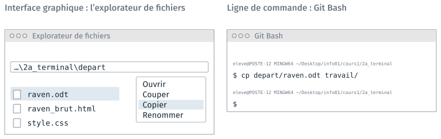
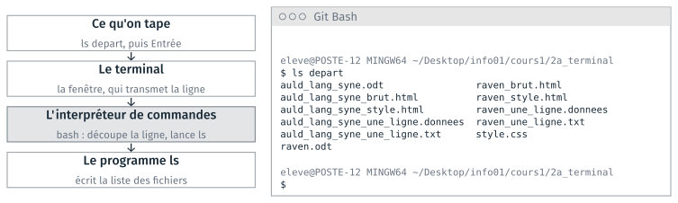
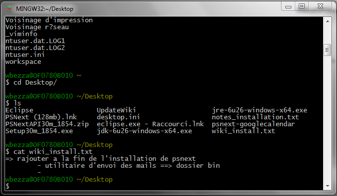
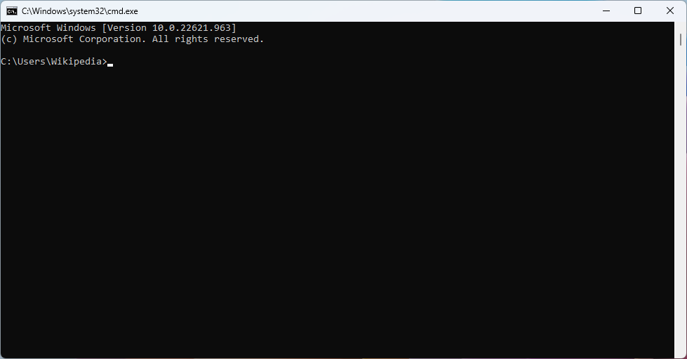
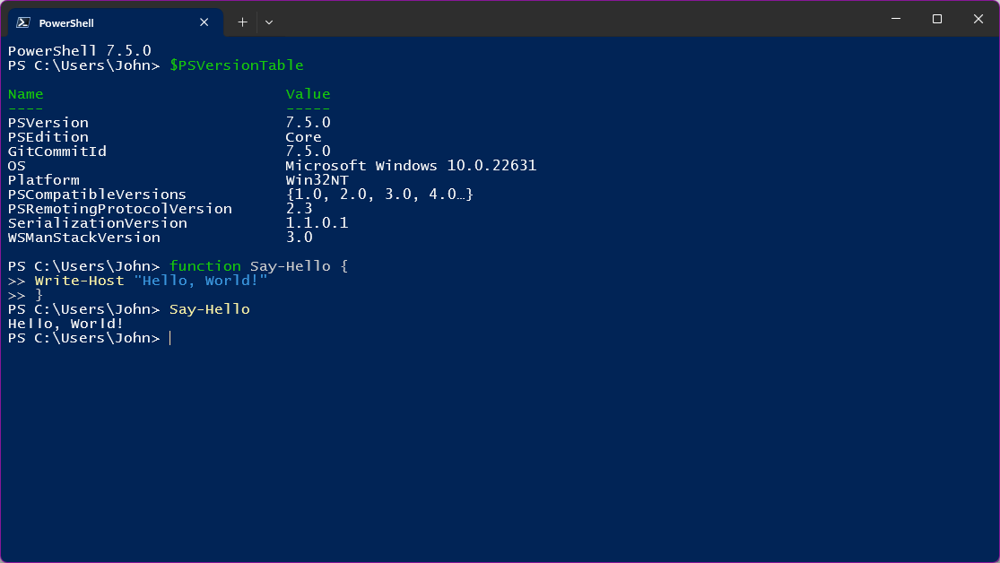
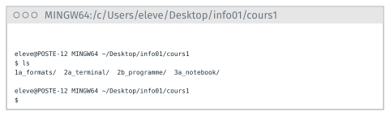

Le terminal#
Cette partie présente la ligne de commande, à côté de l’interface graphique qu’on connaît déjà. Elle décrit ensuite le terminal et l’interpréteur de commandes, le terminal du module, Git Bash, la forme d’une commande, les commandes de base et l’écriture des chemins. Le TD 1b l’accompagne ; il est présenté en fin de page.
Interface graphique et ligne de commande#
Dans une interface graphique, on choisit l’opération parmi celles que la fenêtre affiche. En ligne de commande, on tape le nom de l’opération, qu’il faut connaître.

La même copie, à la souris dans l’explorateur, et au clavier dans Git Bash.#
Les deux copies donnent le même fichier, travail/raven.odt. cp abrège
copy, et n’affiche rien quand la copie réussit.
L’écart se voit quand l’opération se répète. Pour réduire 120 images à 640 pixels de large, Paint demande d’ouvrir, de redimensionner et d’enregistrer chaque image, 120 fois. En ligne de commande, une seule commande traite toutes les images :
magick mogrify -path travail -resize 640 depart/*.png
Le motif * désigne tous les fichiers .png de depart/. Cette commande
sert d’exemple : le programme magick n’est installé qu’au cours 4.
Interface graphique |
Ligne de commande |
|
|---|---|---|
Trouver une opération |
dans les menus affichés |
connaître son nom, ou lire l’aide |
Voir le résultat |
après chaque action |
en le demandant |
Premières utilisations |
peu d’erreurs |
des fautes de frappe, des options oubliées |
Traiter 120 fichiers |
120 fois la même opération |
une commande, avec un motif |
Refaire le travail plus tard |
refaire chaque action |
relancer la commande, gardée dans un fichier |
Travailler sur un serveur |
s’il a un bureau à distance |
par |
L’interface graphique se prend en main plus vite. La ligne de commande répète une opération sur beaucoup de fichiers, et la commande se conserve pour être relancée. Des logiciels graphiques ont aussi un traitement par lots, limité aux opérations qu’ils prévoient.
Le terminal et l’interpréteur de commandes#
Deux programmes se partagent le travail :
le terminal est la fenêtre : il affiche du texte et transmet ce qu’on tape ;
l’interpréteur de commandes, ou shell, lit chaque ligne et lance le programme qu’elle nomme.

La commande ls depart, de la frappe à la liste des fichiers.#
Le mot « terminal » désigne souvent les deux à la fois. Le langage des commandes est celui de l’interpréteur : cmd, PowerShell ou bash.
Git Bash, le terminal du module#
Plusieurs terminaux sont installés sur les postes de la salle, chacun avec son interpréteur.
Terminal |
Où le trouver |
Interpréteur |
Dans le module |
|---|---|---|---|
Invite de commandes |
menu Démarrer |
cmd |
celle d’Anaconda, pour Python et JupyterLab |
Terminal Windows |
menu Démarrer |
PowerShell |
non employé |
Git Bash |
clic droit dans un dossier |
bash |
à toutes les séances |
L’invite, au début de chaque ligne, indique quel interpréteur lit la commande.

Git Bash : utilisateur@machine, puis $.

Invite de commandes : C:\Users\…>.

PowerShell : PS C:\Users\…>.
Captures de Wikimedia Commons : Git Bash de 2011, par Walid.bezza (CC BY-SA 3.0) ; invite de commandes de Windows 11 (domaine public) ; PowerShell 7.5, par Refresh100 (MIT).
bash n’est pas fourni avec Windows. Le module l’emploie pour trois raisons :
bash est l’interpréteur de Linux, installé sur la plupart des serveurs : 92 % des serveurs web sont sous Unix, dont Linux (W3Techs, septembre 2026) ;
il est employé par 49 % des développeurs, contre 23 % pour PowerShell (enquête Stack Overflow 2025) ;
Git Bash est installé avec git, et fournit aussi
ssh, employé au cours 5. Sous macOS, l’interpréteur zsh, très proche, accepte les mêmes commandes.
cmd |
PowerShell |
bash, dans Git Bash |
|
|---|---|---|---|
Sur les postes |
avec Windows |
avec Windows |
avec git |
Sous Linux et macOS |
absent |
à installer |
bash ; zsh sous macOS |
Statut |
conservé pour la compatibilité |
recommandé par Microsoft |
logiciel libre, GNU |
Lister, copier |
|
|
|
Le guide du TD 1b donne en annexe les commandes du TD dans les trois interpréteurs.
L’invite de Git Bash#
Avant chaque commande, Git Bash affiche une invite : l’utilisateur, la
machine et le dossier courant. La commande se tape après le $.

L’invite de Git Bash, dessinée ; le nom du poste est inventé.#
Dans l’invite |
Ce qu’il désigne |
|---|---|
|
l’utilisateur |
|
la machine |
|
Git Bash sous Windows |
|
le dossier personnel, |
|
le dossier courant, où s’exécutent les commandes |
|
l’attente d’une commande |
Le / à la fin d’un nom signale un dossier. Après le TD 1c, une ligne
(base) s’ajoute au-dessus de l’invite : l’environnement conda actif.
La forme d’une commande#
Une commande commence par le nom du programme à lancer. Suivent des options, qui commencent par un tiret, et des arguments, souvent des noms de fichiers :
commande [options] <arguments>
Les crochets désignent ce qui est facultatif, les chevrons ce qu’on remplace.
Commande tapée |
Programme |
Options |
Arguments |
|---|---|---|---|
|
|
||
|
|
|
|
|
|
|
|
|
|
|
|
|
|
|
Une option d’une lettre prend un tiret, une option en toutes lettres en prend deux.
--helpaffiche l’aide de la plupart des commandes.L’interpréteur découpe la ligne aux espaces. Un nom de fichier qui contient une espace s’écrit donc entre guillemets :
cp depart/raven_brut.html "travail/raven brut.html".
Les commandes de base#
Chaque commande de base a son équivalent à la souris dans l’explorateur de fichiers.
Commande |
Ce qu’elle fait |
Dans l’explorateur |
|---|---|---|
|
affiche le dossier courant |
la barre d’adresse |
|
liste le dossier courant |
la fenêtre ouverte |
|
liste le dossier nommé |
ouvrir ce dossier |
|
descend dans le dossier nommé |
double-clic sur le dossier |
|
remonte au dossier parent |
flèche « dossier parent » |
|
copie un fichier |
|
|
déplace ou renomme |
glisser ; |
|
crée un dossier |
Nouveau dossier |
|
supprime, sans passer par la corbeille |
|
|
ouvre avec le logiciel associé |
double-clic |
Avertissement
rm supprime définitivement : le fichier ne va pas dans la corbeille, et
aucune commande ne le rend. Relire la commande avant de la valider, surtout
avec un motif *.
cp -r et rm -r agissent sur un dossier et tout son contenu. start est
propre à Windows ; sous macOS, la commande est open, sous Linux
xdg-open.
Le chemin d’un fichier#
Un chemin absolu part de la racine. Un chemin relatif part du
dossier courant. Dans l’arborescence suivante, les trois chemins du tableau
désignent le même fichier, raven.odt, depuis trois endroits différents.
C:\Users\alice\
└─ cours1\
├─ 1a_formats\
│ └─ depart\
│ └─ raven.odt
└─ 1c_programme\
└─ altitudes.py
Le chemin de |
Depuis |
|
|---|---|---|
Absolu |
|
n’importe où |
Relatif |
|
|
Relatif qui remonte |
|
|
Deux points,
.., désignent le dossier parent ; un point,., le dossier courant.Sous Windows, le séparateur est la barre inversée
\; sous macOS et Linux, la barre/. Le même fichier s’y écrit/home/alice/cours1/1a_formats/depart/raven.odt.
Un programme ne connaît pas à l’avance le chemin absolu du dossier d’un utilisateur, mais il peut s’appuyer sur la position relative des fichiers. Un projet qui n’emploie que des chemins relatifs se copie, se déplace et s’envoie sans modification ; un chemin absolu écrit dans le code ne vaut que sur le poste où il a été écrit. Le TD 2b fait corriger un chemin de ce genre.
Les chemins dans Git Bash#
Git Bash écrit les chemins à la façon de Linux : des barres obliques, et le
disque C: devient /c.
Dans l’explorateur |
Dans Git Bash |
|
|---|---|---|
|
|
chemin absolu |
|
|
le dossier personnel |
le dossier ouvert |
|
le dossier courant |
le dossier au-dessus |
|
le dossier parent |
|
|
chemin relatif |
Note
Un chemin copié depuis la barre d’adresse de l’explorateur garde ses \.
Dans Git Bash, il s’écrit entre guillemets : cd "C:\Users\eleve\Desktop".
Sur un clavier français, ~ se tape AltGr + 2, puis espace.
Fichiers cachés et motif *#
Un nom qui commence par un point désigne un fichier caché : ls ne
l’affiche pas, ls -a l’affiche. Dans un dossier encore vide :
$ ls travail
$ ls -a travail
./ ../
. et .., le dossier courant et son parent, sont les deux entrées cachées
de tout dossier. Les logiciels enregistrent leurs réglages dans des fichiers
cachés : le TD 1c crée .bash_profile dans le dossier personnel, et le
cours 2 un dossier caché, .git.
Dans un nom de fichier, * remplace n’importe quelle suite de
caractères. Git Bash remplace le motif par la liste des noms qui
correspondent, puis lance la commande.
Commande |
Noms désignés dans |
|---|---|
|
les deux fichiers |
|
les cinq fichiers de The Raven |
|
les quatre pages web |
Note
Ces motifs s’appellent glob en anglais. Les expressions régulières,
employées par grep ou le module re de Python, ont une autre syntaxe, où
* répète le caractère précédent.
TD de la partie#
TD 1b — Les fichiers du TD 1a en ligne de commande, 15 minutes : se déplacer avec
pwd,lsetcd; copier, renommer et ouvrir des fichiers aveccp,mvetstart; un nom avec une espace ;mkdir, le motif*etrm.
Pour s’entraîner à la ligne de commande après la séance, des jeux et des exercices sont réunis dans S’entraîner : jeux et exercices.
Les TD des autres parties sont dans Travaux dirigés de la séance 1, version 2.